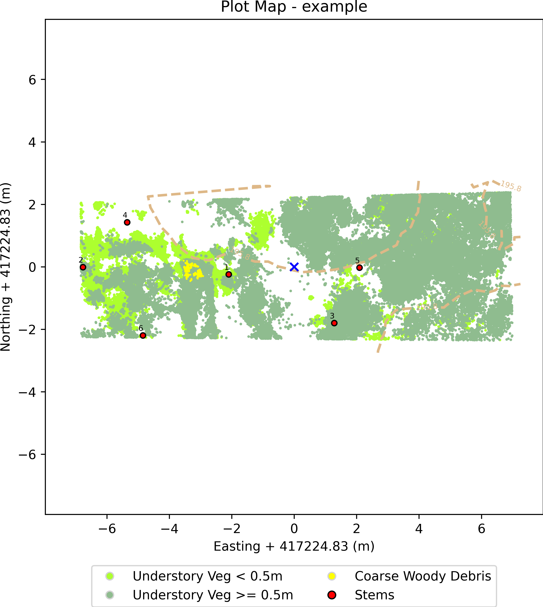

Forest Structural Complexity Tool - Plot Report
Point Cloud Filename: example.las
Plot Centre (Local coords): X: 417224.83 m, Y: 417224.83 m
Plot Area: 0.008 ha
Stems/ha: 776
Mean DBH: 0.32 m
Median DBH: 0.241 m
Min DBH: 0.135 m
Max DBH: 0.603 m
Total Plot Stem Volume 1: 12.452 m3
Total Plot Stem Volume 2: 6.705 m3
FSCT Processing Time: 18.2 minutes
